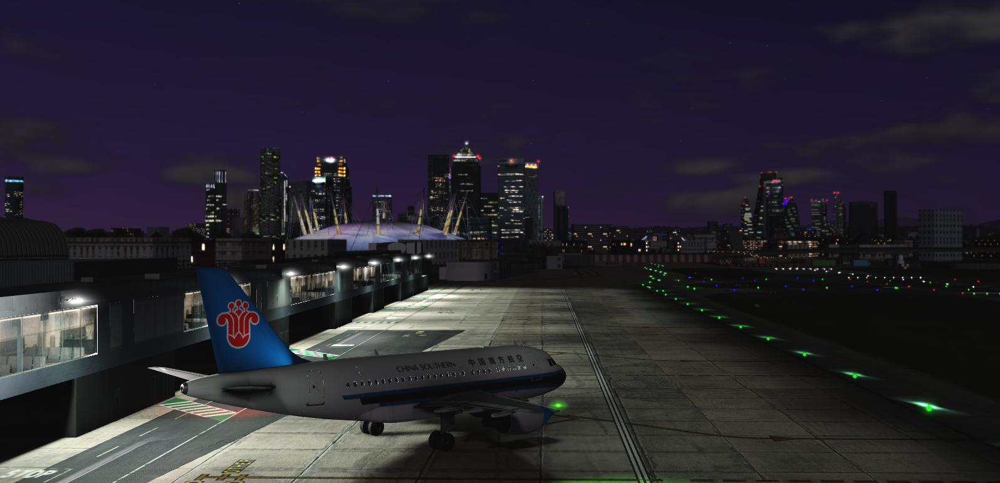
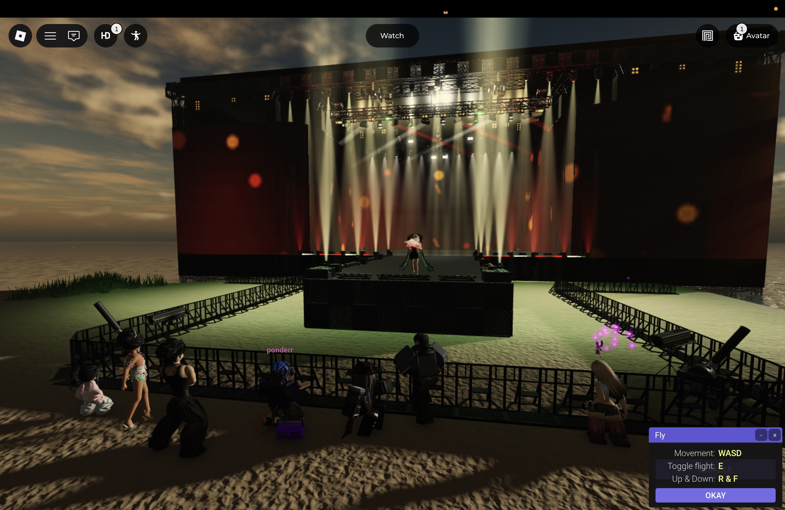
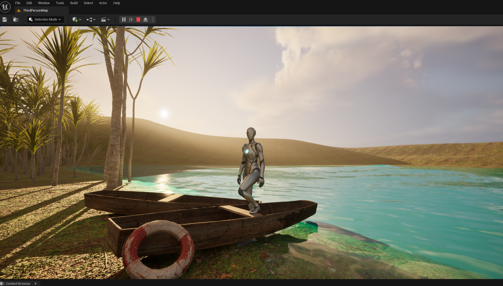
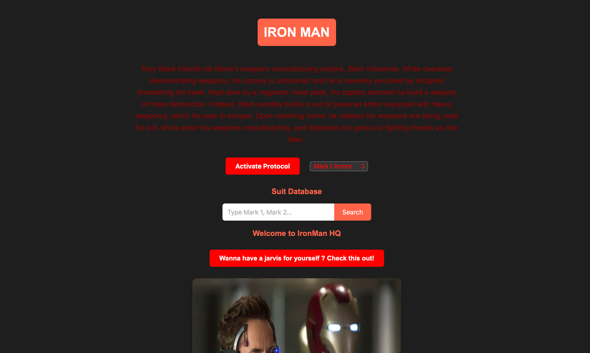
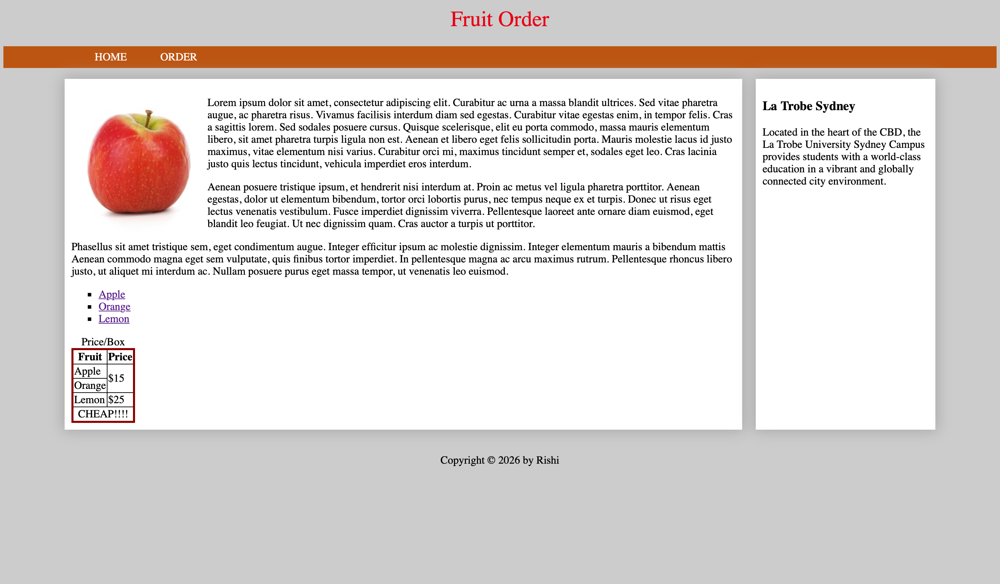
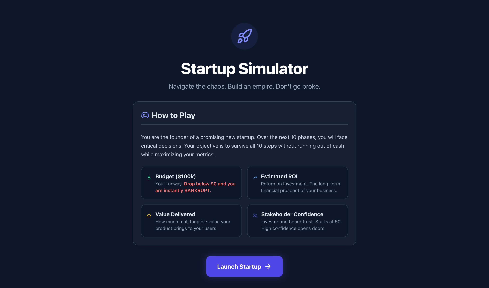
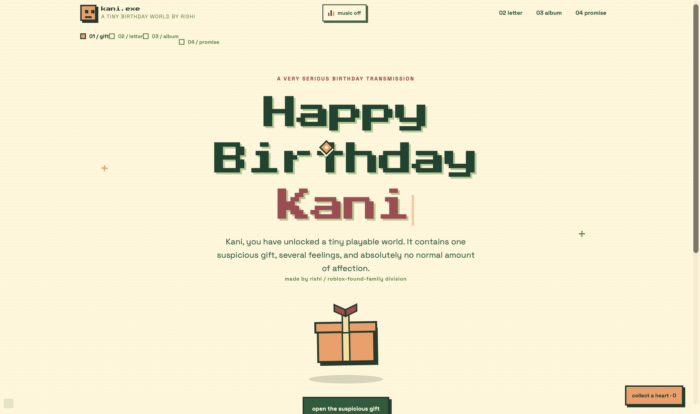
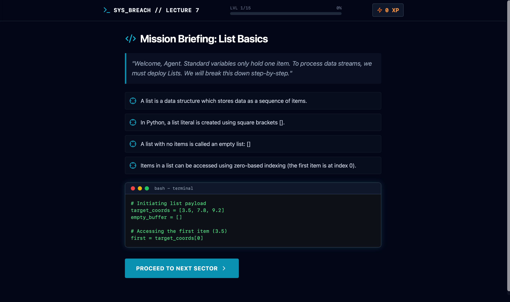
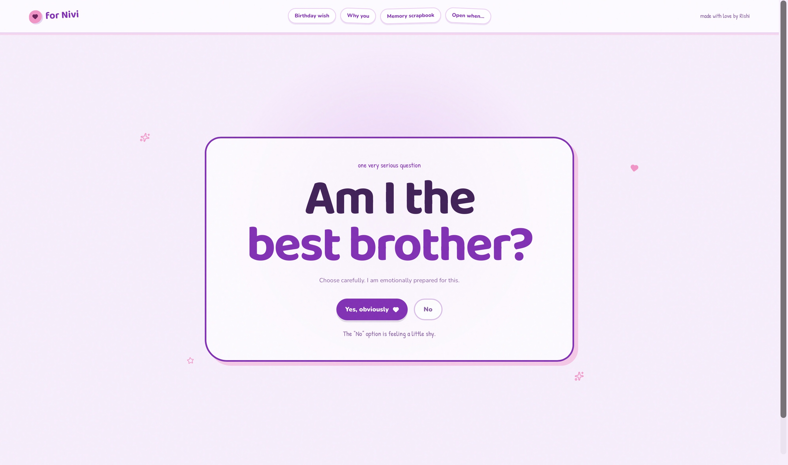
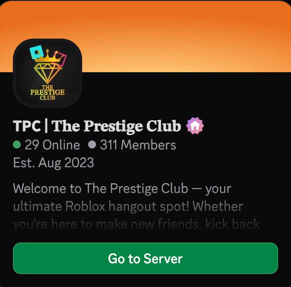

Every system has a boot sequence. My coding journey was initialized back in 2018 in India. My first language was JavaScript, and my first functional project was a 2-player tennis game.
It was simple, raw logic, but seeing lines of text turn into a playable interface flipped a switch in my head. You can test my original architecture right here on this screen.
[CONTROLS: P1 uses W/S | P2 uses UP/DOWN arrows]
After a hiatus focused on academic studies through 11th grade, the system came back online in my 12th year. I started playing Roblox and quickly discovered Roblox Studio.
This introduced me to Lua. Me and my friends began building our own games and environments. It was here that my passion for development solidified—I didn't just want to play games anymore; I wanted to architect them.



With a reinforced passion for software, I resumed my journey with structural programming, learning Java and transitioning deeply into Python.
Currently, under the excellent guidance of Barak Sir in the Inside Information Technology course, I learned the core pillars of web architecture: HTML, CSS, and PHP.
This foundational knowledge gave me the exact tools required to architect, develop, and successfully deploy these robust web applications and websites from scratch.



I believe Artificial Intelligence is the ultimate force multiplier. The one who knows how to seamlessly integrate it will ace the industry. I first engaged with AI in 2022 to optimize my 10th-grade exam revisions, simplifying complex data.
Today, I utilize AI as a collaborative co-pilot to architect massive websites, synthesize audio tracks, and render dynamic visual logos.



A true system relies on its network. Beyond raw code, I have a deep passion for video editing and post-production, treating visual content exactly like a UI interface.
More importantly, I architect and manage massive digital communities. I build and moderate highly structured Discord servers for gaming and coding networks, organizing bot logic, permissions, and thousands of concurrent users into a positive, cohesive environment.

Tony Stark built the Mark I suit in a cave with a box of scraps. For me, that cave was 2018, and those scraps were lines of JavaScript rendering a 2-player tennis game.
Today, whether I am writing Python scripts, generating AI-synthesized assets, or managing massive digital networks, the core directive remains exactly the same: Identify the problem. Engineer the solution. Never stop upgrading.
MAXIMUM CLEARANCE GRANTED. HELLO, BARAK SIR.